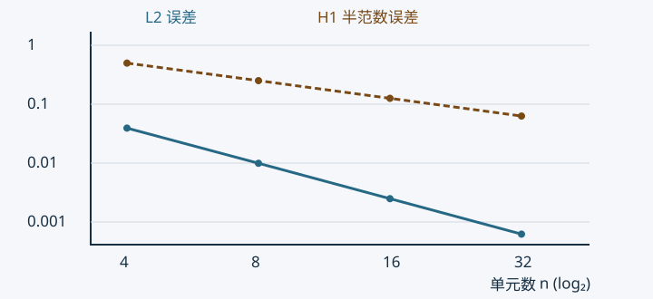

例题、自测与可复现实验#
本页所有练习和参考解由编写者自拟，不是教师作业或官方答案。原始资料没有提供可独立核实的正式作业文件，因此不虚构原题。课堂中的方法与这里用于验证方法的例题分别记录。
先手算，再运行#
| 练习 | 思路 | 参考结果 |
|---|---|---|
| ，四等分差分 | 写正对角矩阵，右端加入已知端温 | 内点 ，精确解 |
| 两单元杆 | ，均布力各分一半，末端加 | ，精确解 |
| 长 2 的 Robin 直边， | 积分两个线性边形函数 | ， |
| 单位正方形 Q4， | 积分 | 完整矩阵 |
| 三角形 ，节点值 | 解三个节点插值条件 | ，能量为 2 |
| 两层材料 ，各长 | 串联热阻或两个单元装配 | 界面温度 0.8，数学通量 1.6 |
第一题详解见差分章。第二题的两单元长度为 ，单元矩阵是 ，每个单元载荷为 。装配且消去首节点后：
解为 。节点恰为精确值是常系数一维特殊性质，单元内线性恢复仍不等于二次精确曲线，应变误差也不为零。
可运行的实验#
项目内命令（Python 3.10+，依赖 NumPy）：
python -m pip install numpy
python scripts/experiments.py
可下载实验源码后，放在项目 scripts/experiments.py 运行，因为图和结果使用固定项目相对目录。输入是脚本内解析模型，无外部数据；没有随机模拟，因此无需随机种子。结果写入项目根目录 实验结果.json，教学图写入 笔记整理/assets/。下载链接由站点构建提供，源码为同一份脚本的构建副本。
计算检查涵盖差分源项符号、非零边界、Neumann 零模态、杆件二次刚度、Q4 积分与特征值、三角形插值/能量、非对称 Jacobian 的梯度变换、双层材料通量和收敛阶。程序遇到失败会抛出错误，不能通过删除检查来交付。
用正弦解观察误差#
制造一个已知精确解的问题：，于是 ，两端为零。分别用一维线性有限元和中心差分求解。有限元载荷与误差使用五点 Gauss； 误差度量场值， 半范数误差度量一阶导数。

图的横轴按 等距，纵轴按 误差等距，连线与虚线同时区分两组量。它是当前光滑模型的数值验证，不是一般收敛定理的证明。
| 单元数 | FEM | FEM 半范数 | FDM 节点最大误差 |
|---|---|---|---|
| 4 | 0.03928435 | 0.49850847 | 0.05302929 |
| 8 | 0.00992092 | 0.25118177 | 0.01295075 |
| 16 | 0.00248650 | 0.12583316 | 0.00321896 |
| 32 | 0.00062202 | 0.06294691 | 0.00080358 |
最后两层的观测阶分别约为 2.00、1.00、2.00；脚本按 实际计算并检查。误差表来自已执行实验，完整精度见 JSON。
可以继续做的变化#
将热源改成另一条光滑函数时，先推导相应精确解再比较；把材料界面移到非中点时，应同时改网格/积分与解析热阻。不得只看一张更平滑的图就判断精度提高。更多概念题见复习页。